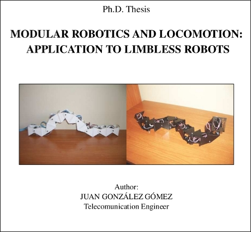

Finally, my PhD thesis is translated into English: “Modular Robotics and Locomotion: Application to Limbless robots”. Many thanks to Walter Routley who has made this dream come true.
It has been published under a Creative Commons Atribution Share-Alike license. You can download the document in PDF and all the source files (Word processor: Lyx. Pictures: Inkscape)
Also, it has been uploaded to Scribd, so that you can read it on-line:
Modular Robotics and Locomotion: Application to Limbless robots
Congratulations!
I have read the parts that was previously in English, now I can read all of it!
All my best,
Per
Thanks Per!
I hope you do not fall asleep while reading it 😉